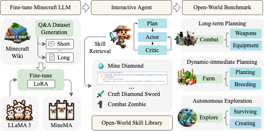

|
Wenkai Fang (方文凯)
Ph.D. candidate
The College of Computer Science and Technology, Zhejiang University
Visual Intelligence and Pattern Analysis (VIPA) Group
Zhejiang, China, 310000
Email: wenkfang at zju dot edu dot cn
|
|
Biography
My research focuses on leveraging reinforcement learning to enhance the reasoning capabilities of large language models (LLMs) and on building general-purpose intelligent agents. I aim to push forward the real-world deployment of LLM-powered agents—enabling them to serve society, improve daily life, and contribute to social good.
Please feel free to contact me if you are interested in my research :)
Preprints
SeRL: Self-Play Reinforcement Learning for Large Language Models with Limited Data
Wenkai Fang, Shunyu Liu
✉, Yang Zhou, Kongcheng Zhang, Tongya Zheng, Kaixuan Chen, Mingli Song, Dacheng Tao
arXiv preprint arXiv:2505.20347, 2025
[arXiv]
[Code]
A Survey of Direct Preference Optimization
Shunyu Liu,
Wenkai Fang, Zetian Hu, Junjie Zhang, Yang Zhou, Kongcheng Zhang, Rongcheng Tu, Ting-En Lin, Fei Huang, Mingli Song, Yongbin Li, Dacheng Tao
✉
arXiv preprint arXiv:2503.11701, 2025
[arXiv]
[Code]
Reasoning with Reinforced Functional Token Tuning
Kongcheng Zhang, Qi Yao, Baisheng Lai, Jiaxing Huang,
Wenkai Fang, Dacheng Tao, Mingli Song, Shunyu Liu
✉
arXiv preprint arXiv:2502.13389, 2025
[arXiv]
[Code]
Publications
* denotes equal contribution, and ✉ denotes the corresponding author.
2025

Odyssey: Empowering Minecraft Agents with Open-World Skills
Shunyu Liu
*, Yaoru Li
*, Kongcheng Zhang
*, Zhenyu Cui
*,
Wenkai Fang*, Yuxuan Zheng, Tongya Zheng, Mingli Song
✉
International Joint Conference on Artificial Intelligence (
IJCAI), 2025
[arXiv]
[Code]
Honors
Awards
-
Outstanding Graduate of Zhejiang Province
2024
-
Outstanding Graduate at the University Level of Zhejiang University
2024
-
Two-time recipient of the First-Class Scholarship at Zhejiang University
2021-2023
-
Three-time recipient of the Zhejiang Provincial Government Scholarship
2020-2023
-
Third-Class Scholarship recipient at Zhejiang University
2020-2021
Competition
-
Champion of the Advanced Group in the ASABE International Student Agricultural Robotics Competition
2023
-
Second Prize in the Zhejiang Provincial Physics Innovation Competition
2022
-
National First Prize in the China Agricultural Robotics Competition
2021
-
National Special Prize in the 5th “Yunfeng Cup” National Green Supply Chain and Reverse Logistics Design Competition
2021
Last updated on Jul 2025. Webpage template borrowed from Prof. Sida Peng.